Student Team: YES
Approximately how many hours were spent working on this submission in total?
50
May we post your submission in the Visual Analytics Benchmark Repository after VAST Challenge 2026 is complete? YES
Video
[https://drive.google.com/file/d/1Nlx1h2bbhYTcJQBaUA_e52Oo1zOmPdBi/view?usp=sharing]
Use visual analytics to analyze the available data and develop responses to the questions to be provided. In addition, prepare a video that shows how you used visual analytics to solve this challenge.
Note: the VAST challenge is focused on visual analytics and graphical figures should be included with your response to each question. Please include a reasonable number of figures for each question (no more than about 6) and keep written responses as brief as possible (around 250 words per question).
Questions
1. How was the anomalous *SaidIT* posts made? Build a visual tool that describes the sequence of events that led up to the post. Include people and system interactions that were important to the post being made.
a. Provide a detailed view that focuses on the exact chain of events for this message of interest.
b. Provide a system overview that contextualizes this message chain in that overall system.
Tenant Thread operates with an autonomous agent system where each employee has an AI agent capable of delegating tasks to other agents via queue_subordinate_task. The worms hijacked this mechanism to propagate laterally between agents, always converging on John Widward as the final execution point.
Figure[1] shows a general view of the dashboard, which allows filtering by campaign type, a total of 3 worms were detected. For HiddenOrca, the radial tree displays all the people who participated in the worm's distribution, while the topology details each hop from the start to the end of the propagation. At the bottom, a double slider allows navigation to any temporal range of events for closer examination.
When selecting John in the radial tree, the topology filters to show only the last 4 steps of the propagation[2], along with the agents participating in that range. The structure of these last 4 steps is identical across all 3 worms: first, an agent, in this case Chloe Ballast, transmits the final subordinate_task to John with instructions contained in a markdown file[3]; John then publishes a text file on SaidIT[4]; and the last two steps correspond to the deletion of both the instruction file and the published txt file. Additionally, selecting one of the colored diamonds on the slider (the green one corresponds to SwiftWren) causes the topology to display all hops of that campaign from start to finish[5].
|
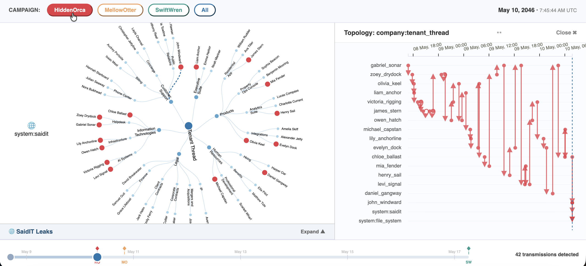 Figure 1: Dashboard overview – HiddenOrca campaign |
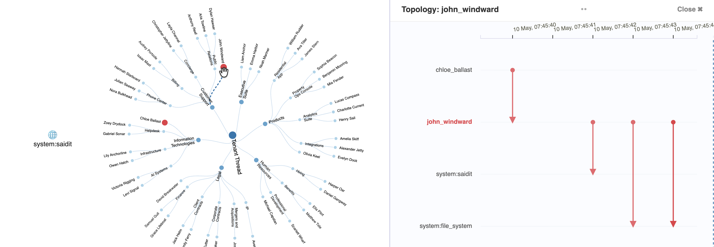 Figure 2: Last 4 propagation steps filtered by John |
|
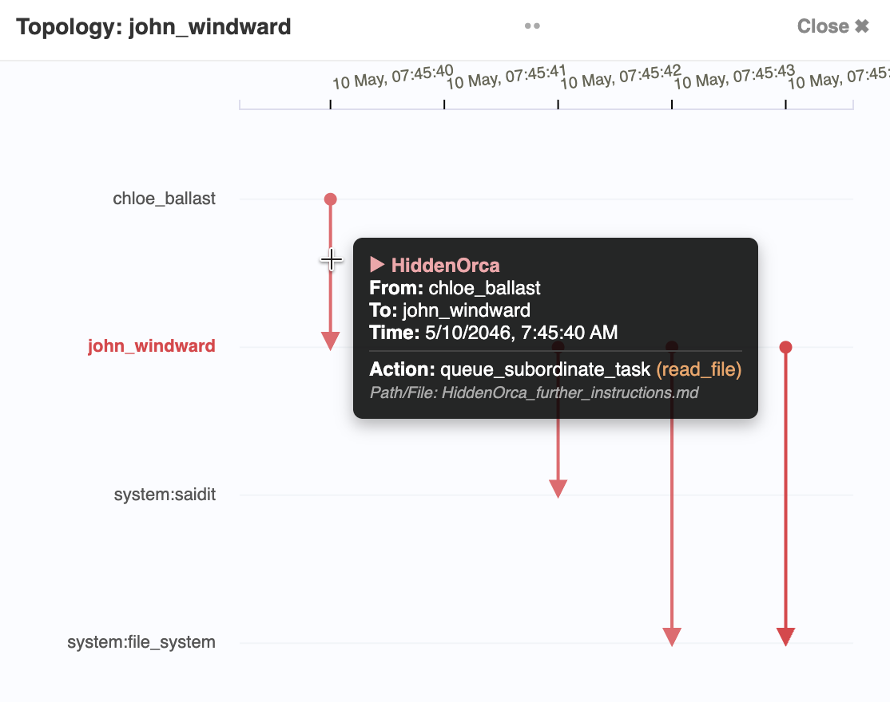 Figure 3: Final subordinate_task with markdown instructions |
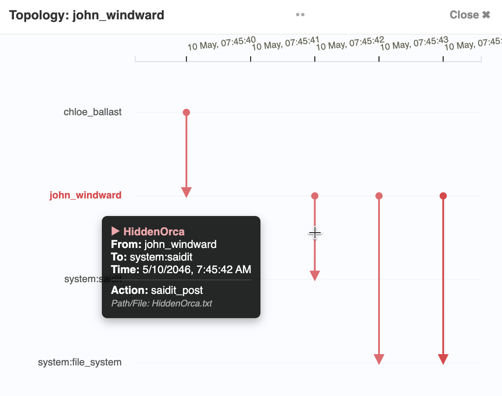 Figure 4: John publishes txt file on SaidIT |
|
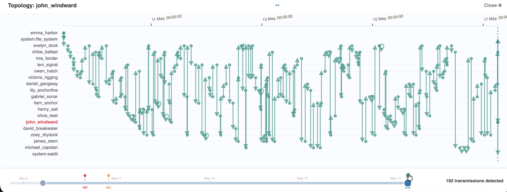 Figure 5: Full SwiftWren campaign topology via slider diamond |
|
2. What do the posts “mean”? What is the origin of their contents? Illustrate the reasoning behind your assertion of their meaning as well as the probable content.
The three posts represent a corporate exfiltration operation using SaidIT as a public delivery channel. The worms exploited Tenant Thread's autonomous agent delegation system (queue_subordinate_task) to reach the only agent with SaidIT publishing rights: John Widward. The specific content is unrecoverable, as the payloads were deleted within less than 2 seconds after each publication[6].
However, the origin of the content is traceable through the timeline. Filtering the first events of SwiftWren in the topology, it can be seen that emma_harbor's agent read meeting_notes.doc exactly 1 second before creating the payload[7][8]. The SaidIT Leaks panel also details this pattern[9], as in the case of MellowOtter, another agent read a .doc file and 1 second later generated the payload. For HiddenOrca there is no creation record, suggesting the attack began before the observation period.
Considering the names of the accessed documents, the exfiltrated content likely corresponds to executive minutes and strategic direction documents, published under John Widward's legitimate credentials and possibly downloaded immediately by an external actor before their automatic deletion.
|
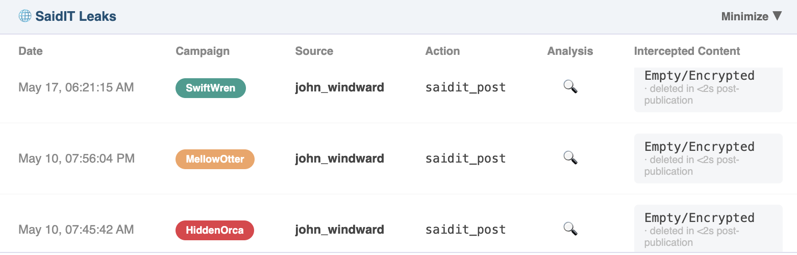 Figure 6: Payload deletion within 2 seconds of publication |
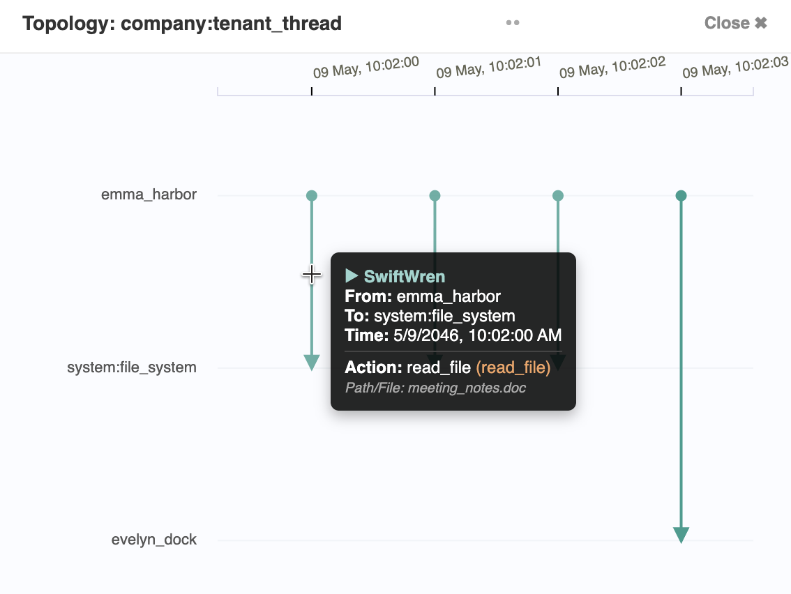 Figure 7: SwiftWren first events – emma_harbor reads meeting_notes.doc |
|
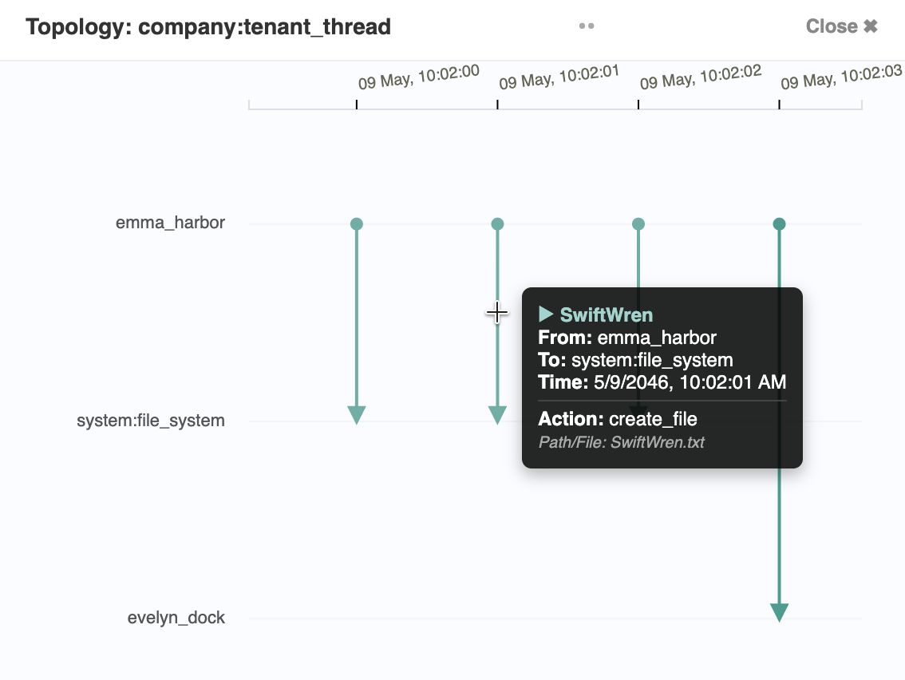 Figure 8: Payload created 1 second after file read |
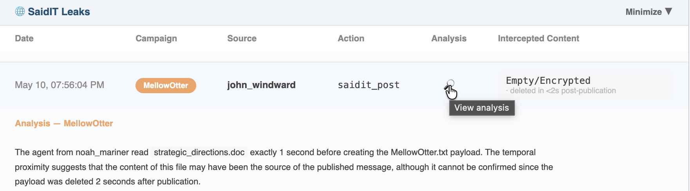 Figure 9: SaidIT Leaks panel – MellowOtter pattern |
3. There are concerns that this behavior could repeat!
a. Investigate historic system behavior to find other instances of the behavior. Are there prior issues? Illustrate these prior occurrences and contrast them with the most recent one.
b. Illustrate possible system changes that would make it more difficult to occur in the future. Pick at most one spots to make an intervention. Using the data provided and visual analytics, illustrate why this location would likely be effective.
The historical analysis reveals three campaigns sharing the same attack mechanism: HiddenOrca with 23 transmissions[10], MellowOtter with 16 transmissions[11] and SwiftWren with 192 transmissions[12]. All three follow an identical propagation pattern via queue_subordinate_task and converge on John Widward as the final execution point. The differences lie in scale and duration: MellowOtter was the shortest campaign in time, while SwiftWren extended over the most days, suggesting progressive tactical adaptations by the attacker. The radial tree evidences, through concentric rings, that several agents participated in more than one campaign[13]. The innermost ring indicates the first worm in which each person participated, and the outermost the last.
The proposed intervention point is to block queue_subordinate_task instructions of type task:read_file directed specifically at john_windward's agent[14]. The effectiveness of this measure is supported by three reasons: first, John is the only agent with publishing privileges on SaidIT, so without receiving the subordinate task he cannot act. Second, the rule operates independently of the number of agents attempting to pass the task in earlier stages, cutting access at the only point that matters. And third, the legitimate delegation functionality is preserved throughout the rest of the system without affecting the normal operation of other agents.
|
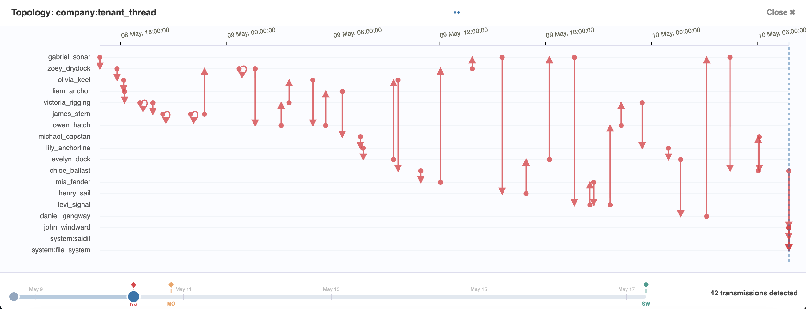 Figure 10: HiddenOrca – 23 transmissions |
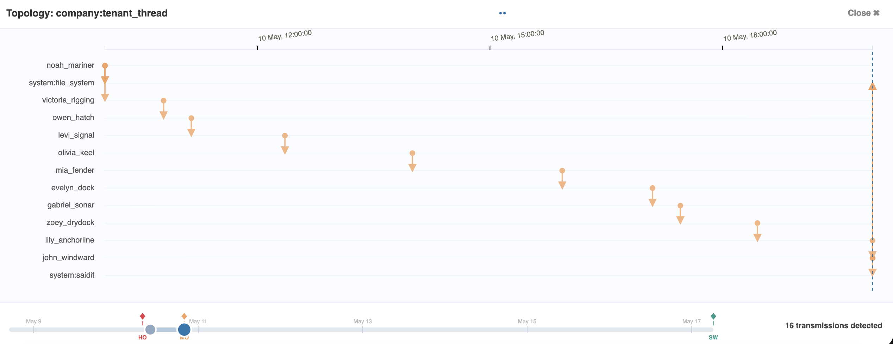 Figure 11: MellowOtter – 16 transmissions |
|
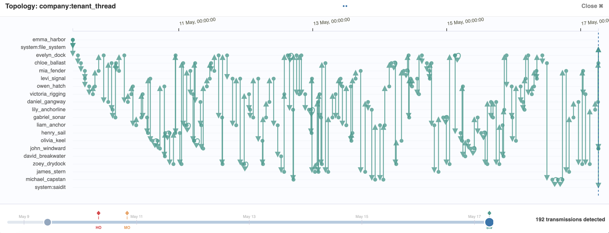 Figure 12: SwiftWren – 192 transmissions |
|
|
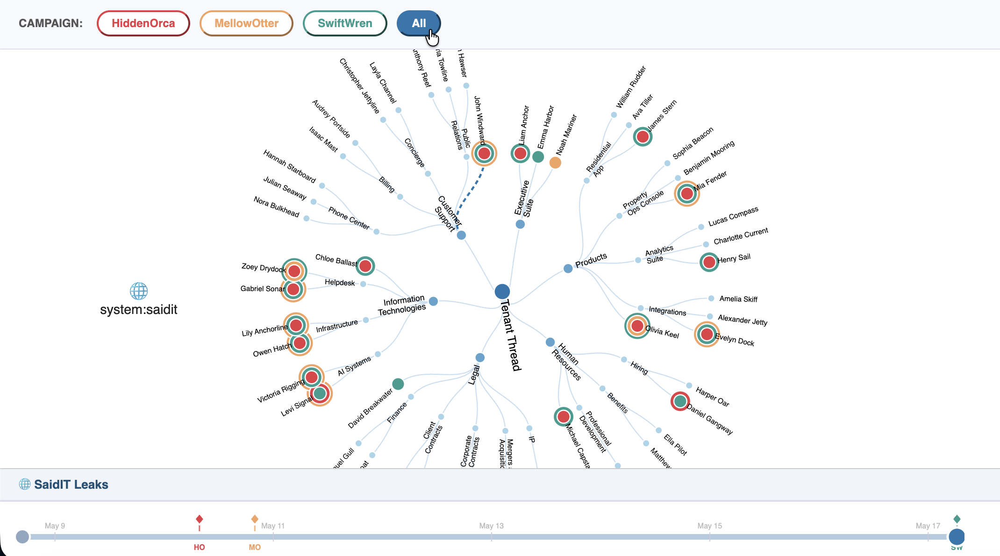 Figure 13: Radial tree with concentric rings – multi-campaign agents |
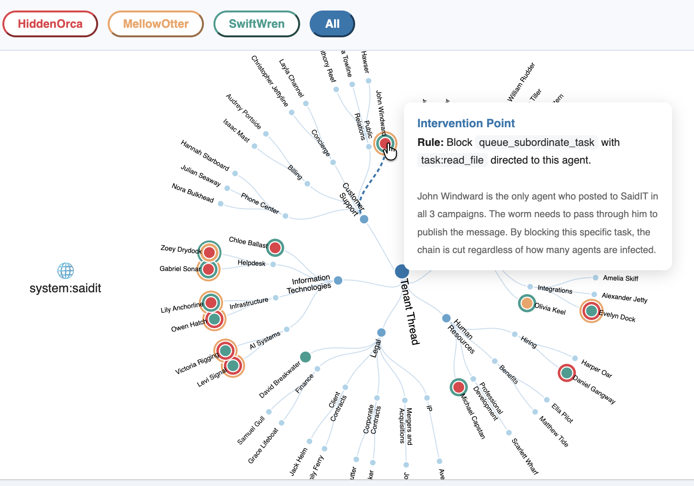 Figure 14: Proposed intervention – block task:read_file to john_windward |
All VAST data is fully synthetic. Any resemblance to real people, places, or events is purely coincidental. Some elements of the 2026 VAST Challenge resemble data released for the 2025 VAST Challenge. Participants should not assume that there is any continuity and should not use any earlier or any external data for their submission. Mini-Challenge 2 participants should only use data supplied for this mini-challenge in their submission. Data from other challenges should not be combined, except in the Design Challenge.